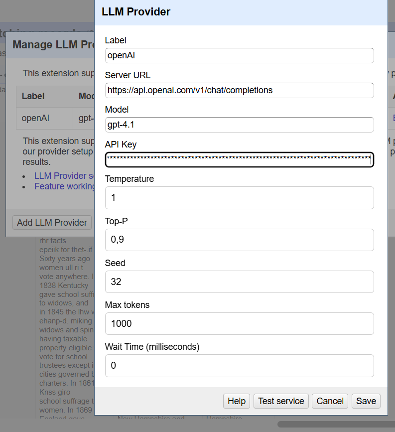

<!doctype html>
<html lang="de">
  <head>
    <meta charset="utf-8">

		<title>Vom Datenchaos zum Kulturschatz</title>

		<meta name="description" content="Einfach erklärt, direkt ausprobiert">
		<meta name="author" content="Roman Kuhn">

		<meta name="apple-mobile-web-app-capable" content="yes">
		<meta name="apple-mobile-web-app-status-bar-style" content="black-translucent">

		<meta name="viewport" content="width=device-width, initial-scale=1.0, maximum-scale=1.0, user-scalable=no, minimal-ui">

    <link rel="stylesheet" href="dist/reveal.css">
    <link rel="stylesheet" href="dist/theme/sky.css">
  </head>
  <body>
    <div class="reveal">
      <div class="slides">
         <section data-background-image="media/Logo_StabiLab_4c.svg" data-background-position="top 40px right 30px"
				data-background-size="150px" data-markdown data-separator="^\n---\n" data-separator-vertical="^\n--\n" data-separator-vertical="^\n--\n" data-charset="utf-8">
          <script type="text/template">
          <!--content goes here-->

          ## Vom <del>Datenchaos</del> zum Kulturschatz

          ### Einfach erklärt, direkt ausprobiert
          


          9. Juli 2025


          ---
          
          
          [Slides](https://r0man-ist.github.io/OR/): https://t1p.de/6lo2l

          Daten: https://github.com/r0man-ist/OR

          Kontakt: roman.kuhn@sbb.spk-berlin.de

---


### Vorab

https://openrefine.org/


---

### Ablauf

<div style="overflow:scroll; height:600px;">
10.00 CheckIn

10.05-10.15 Mini-Vorstellung

10.15-10.20 Open Refine & Kulturdaten 

10.20-10.50 Beispiel 1: Einstieg, Datenbereinigung

11.00-11:30 Beispiel 2: Schnittstellenabfrage

11:40-12:10 Beispiel 3: Textmanipulationen

12:30-13:00 Beispiel 4: Reconciliation

13:10-13:20 Teaser: KI & OpenRefine

13.20-13.30 Feedback & Survey
</div>

---
### Beispiel #1
#### Einstieg, Datenbereinigung


--

#### Einstieg, Datenbereinigung
- Filter
- Facetten
- Sortieren
- Daten korrigieren
- Datentypen anpassen

--

#### Einstieg, Datenbereinigung

- Daten Clustern


--

#### Einstieg, Datenbereinigung

- Export
- Speichern
- Import
- Undo/Redo


---

### Beispiel #2
#### Schnittstellenabfrage


--

#### Schnittstellenabfrage

[Nachlass Werner Heisenberg](https://kalliope-verbund.info/findingaid?fa.id=DE-611-BF-73161&htmlFull=false&lang=de&fa.enum=7648&q.page=0&lastparam=true#1)

<pre><code> https://kalliope-verbund.info/sru?version=1.2&operation=searchRetrieve&query=ead.archdesc.id=%22DE-611-BF-73161%22%20AND%20ead.unitdate_start%3E=1945%20AND%20ead.unitdate_end%3C=1945&recordSchema=dc
</code></pre>

[Abfrage]( https://kalliope-verbund.info/sru?version=1.2&operation=searchRetrieve&query=ead.archdesc.id=%22DE-611-BF-73161%22%20AND%20ead.unitdate_start%3E=1945%20AND%20ead.unitdate_end%3C=1945&recordSchema=dc
)

[Schnittstellenbeschreibung](https://lab.sbb.berlin/kpe/)

--

#### Schnittstellenabfrage

- Record vs. Row
- Filtern
- Join/Split


--

#### Schnittstellenabfrage

- weitere Abfragen

<pre><code> https://kalliope-verbund.info/sru?version=1.2&operation=searchRetrieve&query=ead.id=DE-611-HS-3648708&recordSchema=mods
</code></pre>

- Parsen (xml/html)


---

#### Schnittstellenabfrage
Anderer Katalog, andere Schnittstelle, andere Datenformate

<pre><code>https://sru.k10plus.de/opac-de-1?recordSchema=dc&operation=searchRetrieve&version=1.1&maximumRecords=100&query=pica.xjah=1945+and+pica.xbkl=17.97
</code></pre>

--

#### Schnittstellenabfrage

GREL (General Refine Expression Language)
[Expressions / Functions](https://openrefine.org/docs/manual/expressions)

---


### Beispiel #3
#### Textmanipulationen

[Brief von Magnus Hirschfeld an Gerhart Hauptmann](https://digital.staatsbibliothek-berlin.de/werkansicht?PPN=PPN771823622&PHYSID=PHYS_0001&DMDID=)


--

#### Textmanipulationen
- split
- replace
- Reguläre Ausdrücke 
(https://regex101.com https://regexlearn.com/)

--


---

### Beispiel #4
#### Reconciliation

[Reconciliation Services](https://reconciliation-api.github.io/testbench/#/)

--


---

### Teaser
#### KI & OpenRefine

<a href="https://chroniclingamerica.loc.gov/search/pages/results/?state=Nevada&date1=1870&date2=1910&proxtext=suffrage&x=16&y=5&dateFilterType=yearRange&rows=20&searchType=basic&itemsPerPage=30"></a>


<pre><code>https://chroniclingamerica.loc.gov/search/pages/results/?state=Nevada&date1=1870&date2=1910&proxtext=suffrage&x=16&y=5&dateFilterType=yearRange&rows=20&searchType=basic&itemsPerPage=30&format=json
</code></pre>

--

#### KI & OpenRefine


--

#### KI & OpenRefine



--

#### KI & OpenRefine

Prompt:
<div style="overflow:scroll; height:600px;">

You are an expert in historical newspapers and historical womens' rights movements.

You will read the OCRed page of a historical newspaper, dating from 1870 to 1910. In some sections "suffrage" should be mentioned.

Please summarize the relevant sections.

There will be OCR errors in the text - try to ignore them as best as possible. If in doubt do NOT try to correct illegible OCR passages and do not supply probable substitutions for illegible text.

</div>

--

#### KI & OpenRefine


---
### Weitere Informationen

[OpenRefine-Dokumentation](https://openrefine.org/docs)

[OpenRefine-Forum](https://forum.openrefine.org/)

[LibraryCarpentry-Lesson](https://librarycarpentry.github.io/lc-open-refine/)

---

## Vielen Dank für die Aufmerksamkeit!

Survey: http://sbb.berlin/mjnuj 


roman.kuhn@sbb.spk-berlin.de


</section>
         
        </script>
        
      </div></div></body>
    </div>
    <script src="raphael-min.js"><
      <script src="flowchart-latest.js"></script>
    <script src="dist/reveal.js"></script>
    <script src="plugin/markdown/markdown.js"></script>
    
    <script>
      Reveal.initialize({
    plugins: [ RevealMarkdown ]
  });
    </script>
    

  </body>
</html>